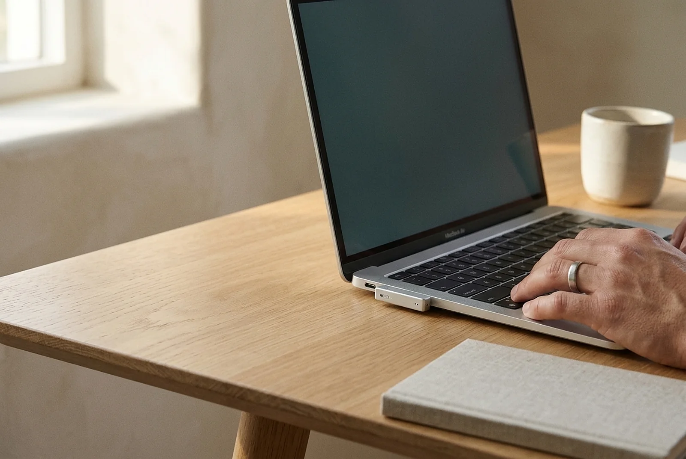
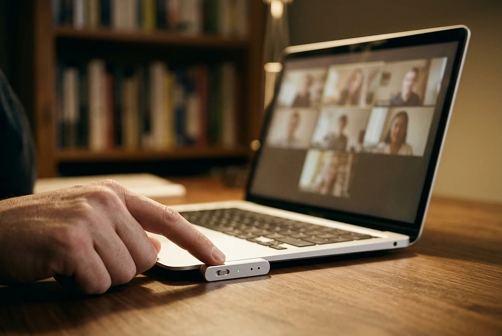
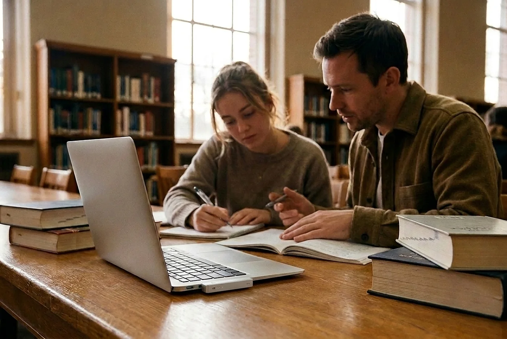
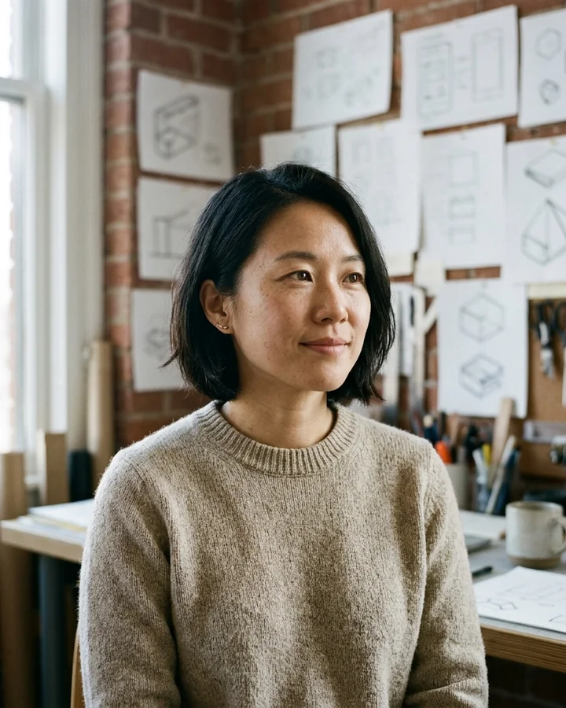

Sending audio
Sending audio
Two people, one small table.
Rutta Bar faces the room from the side of the Mac, so both voices reach it across a café table. No recorder sitting between you.
Rutta Bar · Microphone for MacBook Air
A slim aluminum bar that plugs into the USB-C port and sits flush along the edge. Nothing on the desk, nothing to charge. Slide the switch to mute.

01 — In use
Sending audio
Rutta Bar faces the room from the side of the Mac, so both voices reach it across a café table. No recorder sitting between you.
 Ready
Ready
You keep eye contact instead of watching a recorder. The light on top shows everyone at the table when sound is going to the Mac.

MutedThe switch sits under your fingertip on the edge of the Mac. You can find it mid-sentence, without looking away from the call.

Sending audioThe best questions often come right at the end. Rutta Bar is already plugged in, so there’s nothing to set up when they do.
Concept scenes · Fictional people
02 — Finish
Four aluminum finishes, one for each MacBook Air color.

03 — In the box
A first look at the silver Rutta Bar, nestled in its paper tray. One piece of aluminum, nothing else to find.
9-second silent film · Packaging concept renderThis browser couldn't play the film. Open the MP4 directly.
04 — Fit
The plug slips into the left USB-C port nearest the palm rest. Your Mac supplies the power, so there’s no cable across the desk.

05 — Mute
The metal switch sits on the outer edge, right under your fingertip. A light next to the R on top shows when audio is going to your Mac.

The light on top breathes green while the microphone is ready.
Interactive demo. Click the switch or drag it left to mute and right to unmute.
06 — Hardware
Turn Rutta Bar around, or choose a detail to see how it fits together.
07 — After the talk
Two teammates settle a detail before they leave the table. In the proposed Rutta app, they’d review the decision and who owns the next step before sharing it with the team.
Reviewed by Maya and Leo
08 — Who it’s for

“Our reviews happen at a café table, not in a booked room. I’d want it plugged in when the sketches come out, so I’m not scribbling while Leo talks.”
MayaProduct designer

“In interviews my eyes should be on the participant, not a recorder. And a light they can see is an honest signal that we’re recording.”
DanaUX researcher

“Students ask their best questions in the last five minutes. I’d want those kept without setting anything up.”
TomásUniversity tutor
Fictional personas, written to illustrate how Rutta Bar could be used. Not customer reviews.
Clearance around neighboring plugs and the display hinge still needs testing on a physical sample.
The built-in USB-C plug carries power from the Mac and audio back to it. The design has no battery to charge. It uses the port closest to the palm rest, leaving the other USB-C port and MagSafe behind it.
The shell and switch cap are designed in anodized aluminum. The four render studies are Silver, Sky Blue, Starlight and Midnight. Final colors will be matched against physical samples.
This is an industrial design concept. The page shows the intended fit, controls and indicator behavior. Pickup from different seats, keyboard noise and real-world fit still need prototype tests.